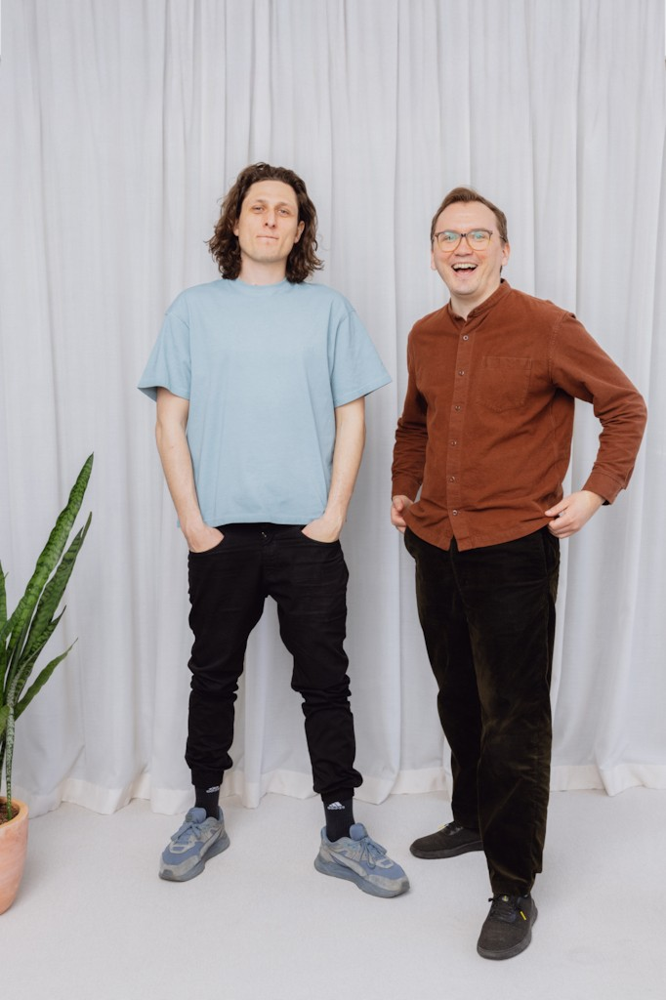

Ordinary Objects
Prototype high fidelity spatial apps.
{kind=link}
Unlock space as a creative medium
I am happy to announce that Ordinary Objects is now in Beta and open for everyone to use. We've been hard at work the last two years, I am super excited to see how people push the boundaries of AR using our editor.
OO consists of a desktop editor (MacOS and Windows) and mirror applications on iOS and Meta Quest.
{kind=link}
Ordinary Objects is designed to facilitate rapid, no code, prototyping for novel spatial concepts. Taking a lot of notes from 2D design tools, everything is built to be real-time and multi-collaborator from the ground up.
It has been a privilege to take on this crazy challenge with an amazing team. Can't wait to build even more on top of what we have created.
A more detailed, visual overview is available at Ordinary.Space
Example Output
Multi-anchor prototype:
Original Announcement

{kind=link}
I am excited to finally be able to share what Gregor and I have been brewing for quite a while now. Ordinary Objects is a product that I've wanted to have every time I started an AR/VR project. Whether building products or making art this medium makes it difficult to explore and refine interactive experiences. All parts of the process consume too much precious time. The ideas for things to try and test are near endless, but the opportunity is often just not there to explore and iterate enough. This takes quality AR experiences out of the reach of many creators.
Designers have struggled with this in the 2000s when building foundations for the interactive web we see today. But over time tools that focus on design iteration became the norm, and set the standards. Building out both a shared vocabulary and a shared subset of interaction design patterns. Today 2D design processes are well understood, and through tools, well established. This frees designers to explore new possibilities and craft more cohesive experiences.
With Ordinary Objects we aim to help nudge AR and spatial interaction design in a similar way. Learning from key elements that make 2D design tools essential, and expanding both the interaction vocabulary and patterns when it comes to building directly for the spaces around us.
We have been fortunate to be able to test out our ideas and validate our concepts during our time at Bakken & Bæck. The expertise of their team really pushed us in the right direction, and help build momentum for the future.
I love building tools that give people an easier time doing what they love to do. And I really can't wait to see what becomes possible when creators are no longer burdened by current workflows and processes.
- Read our funding announcement.